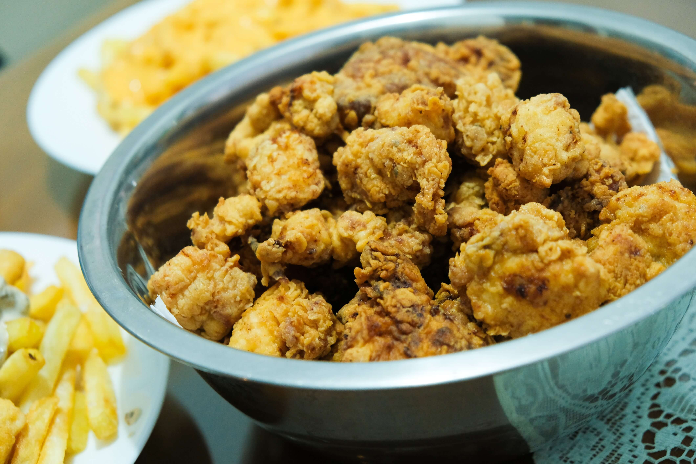

El Pollo Frito es otro de mis platos favoritos. La textura crujiente y el sabor especiado del pollo frito hacen que cada bocado sea una verdadera delicia. Es el acompañamiento perfecto para una comida o simplemente para disfrutar en cualquier momento.
